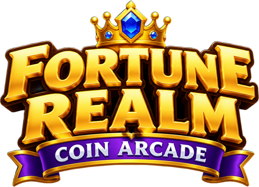

Fortune Realm: Coin Arcade
Support · 18+ · Virtual coins only
Contact
Questions, bugs or ideas? Email teomichielli08@gmail.com and you'll get a reply within a few days. For bug reports, please include your iPhone or iPad model, your iOS version and a screenshot.
Common questions
Can I win real money?
No. Fortune Realm is a social casino game for entertainment only. Coins, gems, keys, stickers and prizes are virtual. They have no real-world value and can't be cashed out, sold, transferred or exchanged for anything of value. Playing or winning here does not mean you would win at real-money gambling.
Does it cost money?
No. The game is free and there is nothing to buy. Coins come from playing, the free bonus every few hours, daily rewards, missions and optional video ads.
I ran out of coins.
Collect the free bonus in the lobby, claim your daily reward or finish a mission. You can also watch an optional video for free coins.
How do invite codes work?
Open Invite in the lobby to share your 6-character code. When a friend enters it in their game, you both receive 500,000 virtual coins (up to 10 friends). Each player can redeem one code.
How does the leaderboard work?
If you're signed in to Game Center, the coins you win each week are posted to the weekly Fortune Realm leaderboard, which resets every week. Sign in under Settings > Game Center on your device.
Why do I see ads?
Ads keep the game free. Video ads you choose to watch give rewards. Short ad breaks only appear between games for returning players and never in your first sessions. You can change ad privacy choices from the in-game Settings where your region requires it.
Will I lose my progress?
Progress is saved on your device. Deleting the app erases it, and it doesn't transfer between devices.
Who can play?
Fortune Realm is intended for adults aged 18 and over.
Play responsibly
Take breaks and play for fun. If you or someone you know is worried about gambling, free and confidential help is available: in the US call or text 1-800-GAMBLER, in Canada visit ConnexOntario or your provincial helpline, in the UK visit BeGambleAware.